ActD créer une activité
UMLActivity
Untitled
::
Activité
::
ActD créer une activité
Description
none
Diagrams

ActD Créer une activité
Groups
Utilisateur
SI
BDD
Edges
(InitialNode1→Créer une activité)
(Créer une activité→Afficher le formulaire d'activité)
(Afficher le formulaire d'activité→Remplir le formulaire)
(Remplir le formulaire→Vérifier les informations)
(Vérifier les informations→DecisionNode1)
NOK (DecisionNode1→Afficher un message d'erreur)
OK (DecisionNode1→Vérifier si l'activité n'existe pas)
(Vérifier si l'activité n'existe pas→DecisionNode2)
NOK (DecisionNode2→Afficher un message d'erreur)
OK (DecisionNode2→Enregistrer les informations)
(Enregistrer les informations→Envoyer un message d'accomplissement)
(Envoyer un message d'accomplissement→ActivityFinalNode1)
Properties
Name
Value
name
ActD créer une activité
stereotype
null
visibility
public
isReentrant
true
isReadOnly
false
isSingleExecution
false
Owned Elements
ActD Créer une activité